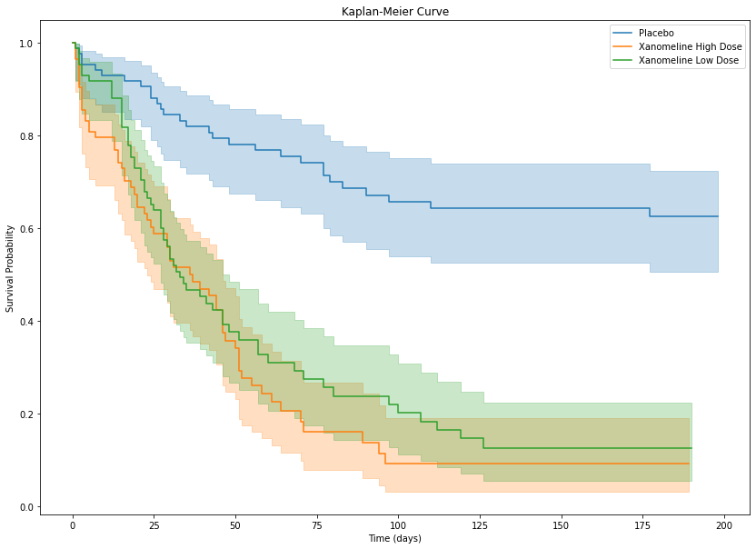

import pandas as pd
import numpy as np
import pyreadstat
import os
from pathlib import Path
from scipy import stats
import statsmodels.api as sm
import statsmodels.formula.api as smf
import patsy
from lifelines import KaplanMeierFitter
import matplotlib.pyplot as plt
from lifelines.statistics import logrank_test
from lifelines import CoxPHFitterPurpose of this Post
The objective of this project is to demonstrate a typical clinical trial analysis workflow using CDISC ADaM datasets, including baseline summary, efficacy analyses, and safety evaluations.
본 프로젝트의 목적은 CDISC ADaM 데이터셋을 활용하여 임상시험 분석의 전형적인 workflow(기초 특성 분석, 유효성 분석, 안전성 분석)를 구현하는 것이다.
ADaM Analysis Data Model
The ADaM (Analysis Data Model) dataset is a CDISC standard for organizing clinical trial data to support statistical analysis, regulatory reporting, and traceability. Derived from SDTM (Study Data Tabulation Model) data, ADaM datasets are designed to be “analysis-ready” for generating tables, listings, and figures. They are required by regulatory agencies like the FDA and PMDA.
Reference
Methodology
This was a prospective, randomized, multi-center, double-blind, placebo-controlled, parallel-group study. Subjects were randomized equally to placebo, xanomeline low dose, or xanomeline
Study Overview
- Study design:
- Phase II randomized clinical trial
- 3 treatment arms (Placebo / Low dose / High dose)
- Duration: 26 weeks
- Population: Mild–moderate Alzheimer’s disease patients
- Primary objectives
- Evaluate efficacy of active drug vs placebo
- Assess safety and tolerability
- Endpoints
- Primary efficacy:
- ADAS-Cog score
- Secondary:
- CIBIC+
- NPI
- Safety
- Adverse events
- Laboratory tests
- Vital signs
- Primary efficacy:
Study Objective
- The objective of the study was to evaluate the efficacy and safety of Xanomeline in patients with Alzheimer’s disease.
- 이 연구의 목적은 알츠하이머병 환자에서 Xanomeline의 유효성과 안전성을 평가하는 것이다.
Import
Data
data_folder = Path("../../../../delete/adam/")
files = [
"adae.xpt",
"adlbc.xpt",
"adlbh.xpt",
"adlbhy.xpt",
"adqsadas.xpt",
"adqscibc.xpt",
"adqsnpix.xpt",
"adsl.xpt",
"adtte.xpt",
"advs.xpt"
]data = {}
metadata = {}for f in files:
full_path = data_folder / f
df, meta = pyreadstat.read_xport(full_path)
key = f.replace(".xpt","")
data[key] = df
metadata[key] = meta
print(f"{f} loaded:", df.shape)adae.xpt loaded: (1191, 55)
adlbc.xpt loaded: (74264, 46)
adlbh.xpt loaded: (49932, 46)
adlbhy.xpt loaded: (9954, 43)
adqsadas.xpt loaded: (12463, 40)
adqscibc.xpt loaded: (730, 36)
adqsnpix.xpt loaded: (31140, 41)
adsl.xpt loaded: (254, 48)
adtte.xpt loaded: (254, 26)
advs.xpt loaded: (32139, 34)- How could get the information of dataset?
metadata['adsl'].column_names_to_labels{'STUDYID': 'Study Identifier',
'USUBJID': 'Unique Subject Identifier',
'SUBJID': 'Subject Identifier for the Study',
'SITEID': 'Study Site Identifier',
'SITEGR1': 'Pooled Site Group 1',
'ARM': 'Description of Planned Arm',
'TRT01P': 'Planned Treatment for Period 01',
'TRT01PN': 'Planned Treatment for Period 01 (N)',
'TRT01A': 'Actual Treatment for Period 01',
'TRT01AN': 'Actual Treatment for Period 01 (N)',
'TRTSDT': 'Date of First Exposure to Treatment',
'TRTEDT': 'Date of Last Exposure to Treatment',
'TRTDUR': 'Duration of Treatment (days)',
'AVGDD': 'Avg Daily Dose (as planned)',
'CUMDOSE': 'Cumulative Dose (as planned)',
'AGE': 'Age',
'AGEGR1': 'Pooled Age Group 1',
'AGEGR1N': 'Pooled Age Group 1 (N)',
'AGEU': 'Age Units',
'RACE': 'Race',
'RACEN': 'Race (N)',
'SEX': 'Sex',
'ETHNIC': 'Ethnicity',
'SAFFL': 'Safety Population Flag',
'ITTFL': 'Intent-To-Treat Population Flag',
'EFFFL': 'Efficacy Population Flag',
'COMP8FL': 'Completers of Week 8 Population Flag',
'COMP16FL': 'Completers of Week 16 Population Flag',
'COMP24FL': 'Completers of Week 24 Population Flag',
'DISCONFL': 'Did the Subject Discontinue the Study?',
'DSRAEFL': 'Discontinued due to AE?',
'DTHFL': 'Subject Died?',
'BMIBL': 'Baseline BMI (kg/m^2)',
'BMIBLGR1': 'Pooled Baseline BMI Group 1',
'HEIGHTBL': 'Baseline Height (cm)',
'WEIGHTBL': 'Baseline Weight (kg)',
'EDUCLVL': 'Years of Education',
'DISONSDT': 'Date of Onset of Disease',
'DURDIS': 'Duration of Disease (Months)',
'DURDSGR1': 'Pooled Disease Duration Group 1',
'VISIT1DT': 'Date of Visit 1',
'RFSTDTC': 'Subject Reference Start Date/Time',
'RFENDTC': 'Subject Reference End Date/Time',
'VISNUMEN': 'End of Trt Visit (Vis 12 or Early Term.)',
'RFENDT': 'Date of Discontinuation/Completion',
'DCDECOD': 'Standardized Disposition Term',
'DCREASCD': 'Reason for Discontinuation',
'MMSETOT': 'MMSE Total'}ADaM Data Explanation
- ADAS-Cog (Alzheimer’s Disease Assessment Scale – Cognitive Subscale)
- ADAS-Cog score
metadata['adqsadas'].column_names_to_labels{'STUDYID': 'Study Identifier',
'SITEID': 'Study Site Identifier',
'SITEGR1': 'Pooled Site Group 1',
'USUBJID': 'Unique Subject Identifier',
'TRTSDT': 'Date of First Exposure to Treatment',
'TRTEDT': 'Date of Last Exposure to Treatment',
'TRTP': 'Planned Treatment',
'TRTPN': 'Planned Treatment (N)',
'AGE': 'Age',
'AGEGR1': 'Pooled Age Group 1',
'AGEGR1N': 'Pooled Age Group 1 (N)',
'RACE': 'Race',
'RACEN': 'Race (N)',
'SEX': 'Sex',
'ITTFL': 'Intent-to-Treat Population Flag',
'EFFFL': 'Efficacy Population Flag',
'COMP24FL': 'Completers of Week 24 Population Flag',
'AVISIT': 'Analysis Visit',
'AVISITN': 'Analysis Visit (N)',
'VISIT': 'Visit Name',
'VISITNUM': 'Visit Number',
'ADY': 'Analysis Relative Day',
'ADT': 'Analysis Date',
'PARAM': 'Parameter',
'PARAMCD': 'Parameter Code',
'PARAMN': 'Parameter (N)',
'AVAL': 'Analysis Value',
'BASE': 'Baseline Value',
'CHG': 'Baseline Value',
'PCHG': 'Percent Change from Baseline',
'ABLFL': 'ABLFL',
'ANL01FL': 'Analysis Record Flag 01',
'DTYPE': 'Derivation Type',
'AWRANGE': 'Analysis Window Valid Relative Range',
'AWTARGET': 'Analysis Window Target',
'AWTDIFF': 'Analysis Window Diff from Target',
'AWLO': 'Analysis Window Beginning Timepoint',
'AWHI': 'Analysis Window Ending Timepoint',
'AWU': 'Analysis Window Unit',
'QSSEQ': 'Sequence Number'}- Clinician’s Interview-Based Impression of Change
metadata['adqscibc'].column_names_to_labels{'STUDYID': 'Study Identifier',
'SITEID': 'Study Site Identifier',
'SITEGR1': 'Pooled Site Group 1',
'USUBJID': 'Unique Subject Identifier',
'TRTSDT': 'Date of First Exposure to Treatment',
'TRTEDT': 'Date of Last Exposure to Treatment',
'TRTP': 'Planned Treatment',
'TRTPN': 'Planned Treatment (N)',
'AGE': 'Age',
'AGEGR1': 'Pooled Age Group 1',
'AGEGR1N': 'Pooled Age Group 1 (N)',
'RACE': 'Race',
'RACEN': 'Race (N)',
'SEX': 'Sex',
'ITTFL': 'Intent-to-Treat Population Flag',
'EFFFL': 'Efficacy Population Flag',
'COMP24FL': 'Completers of Week 24 Population Flag',
'AVISIT': 'Analysis Visit',
'AVISITN': 'Analysis Visit (N)',
'VISIT': 'Visit Name',
'VISITNUM': 'Visit Number',
'ADY': 'Analysis Relative Day',
'ADT': 'Analysis Date',
'PARAMCD': 'Parameter Code',
'PARAM': 'Parameter',
'PARAMN': 'Parameter (N)',
'AVAL': 'Analysis Value',
'ANL01FL': 'Analysis Record Flag 01',
'DTYPE': 'Derivation Type',
'AWRANGE': 'Analysis Window Valid Relative Range',
'AWTARGET': 'Analysis Window Target',
'AWTDIFF': 'Analysis Window Diff from Target',
'AWLO': 'Analysis Window Beginning Timepoint',
'AWHI': 'Analysis Window Ending Timepoint',
'AWU': 'Analysis Window Unit',
'QSSEQ': 'Sequence Number'}Summary
Analysis Populations
- Population Summary
Show Python code
df = data['adsl']
rows = ['SAFFL','ITTFL','EFFFL']
result = []
for flag in rows:
ct = pd.crosstab(df[flag], df['ARM']).reindex(['Y','N'], fill_value=0)
pct = ct.div(ct.sum(axis=0), axis=1) * 100
formatted = ct.astype(str) + " (" + pct.round(1).astype(str) + "%)"
total_ct = df[flag].value_counts().reindex(['Y','N'], fill_value=0)
total_pct = total_ct / len(df) * 100
formatted['Total'] = (
total_ct.astype(str) + " (" +
total_pct.round(0).astype(int).astype(str) + "%)"
)
formatted.index = [f"{flag}={i}" for i in formatted.index]
result.append(formatted)
table = pd.concat(result)
table| ARM | Placebo | Xanomeline High Dose | Xanomeline Low Dose | Total |
|---|---|---|---|---|
| SAFFL=Y | 86 (100.0%) | 84 (100.0%) | 84 (100.0%) | 254 (100%) |
| SAFFL=N | 0 (0.0%) | 0 (0.0%) | 0 (0.0%) | 0 (0%) |
| ITTFL=Y | 86 (100.0%) | 84 (100.0%) | 84 (100.0%) | 254 (100%) |
| ITTFL=N | 0 (0.0%) | 0 (0.0%) | 0 (0.0%) | 0 (0%) |
| EFFFL=Y | 79 (91.9%) | 74 (88.1%) | 81 (96.4%) | 234 (92%) |
| EFFFL=N | 7 (8.1%) | 10 (11.9%) | 3 (3.6%) | 20 (8%) |
Demographics and Baseline Characteristics
- Describe comparability of treatment groups
Show Python code
def _fmt_p(p):
if pd.isna(p):
return ""
if p < 0.001:
return "<0.001"
return f"{p:.3f}"
def _mean_sd(x):
x = pd.to_numeric(x, errors="coerce").dropna()
if len(x) == 0:
return ""
return f"{x.mean():.1f} ({x.std(ddof=1):.1f})"
def _n_pct(n, denom):
if denom == 0:
return f"{n} (0.0%)"
return f"{n} ({100*n/denom:.1f}%)"
def _shapiro_p(x):
x = pd.to_numeric(x, errors="coerce").dropna()
n = len(x)
if n < 3:
return np.nan
if n > 5000:
x = x.sample(5000, random_state=1)
try:
return stats.shapiro(x).pvalue
except Exception:
return np.nan
def _cont_pvalue(df, var, arm_col, normality=True, alpha=0.05):
groups = []
for _, sub in df.groupby(arm_col, dropna=False):
x = pd.to_numeric(sub[var], errors="coerce").dropna().values
groups.append(x)
nonempty = [g for g in groups if len(g) > 0]
if len(nonempty) < 2:
return (np.nan, "NA")
if normality:
ps = []
for _, sub in df.groupby(arm_col, dropna=False):
ps.append(_shapiro_p(sub[var]))
# any NaN (too small n) or any p<=alpha -> Kruskal (conservative)
if any(pd.isna(p) for p in ps) or any(p <= alpha for p in ps):
try:
return (stats.kruskal(*nonempty).pvalue, "Kruskal–Wallis")
except Exception:
return (np.nan, "Kruskal–Wallis")
else:
try:
return (stats.f_oneway(*nonempty).pvalue, "ANOVA")
except Exception:
return (np.nan, "ANOVA")
else:
try:
return (stats.f_oneway(*nonempty).pvalue, "ANOVA")
except Exception:
return (np.nan, "ANOVA")
def _cat_pvalue(df, var, arm_col):
tab = pd.crosstab(df[var], df[arm_col], dropna=False)
if tab.shape[0] < 2 or tab.shape[1] < 2:
return (np.nan, "NA")
try:
chi2, p, dof, expected = stats.chi2_contingency(tab.values, correction=False)
except Exception:
return (np.nan, "Chi-square")
# 2x2 and any expected <5 -> Fisher
if tab.shape == (2, 2) and (expected < 5).any():
try:
_, p_f = stats.fisher_exact(tab.values)
return (p_f, "Fisher’s exact")
except Exception:
return (p, "Chi-square")
return (p, "Chi-square")
def make_table1_adsl(
df,
arm_col="ARM",
continuous=None,
categorical=None,
labels=None,
normality_for_continuous=True,
include_missing_row=True,
pct_decimals=1,
cont_decimals=1,
):
continuous = continuous or []
categorical = categorical or []
labels = labels or {}
# ARM levels in appearance order (keep NaN last)
arm_levels = df[arm_col].dropna().unique().tolist()
if df[arm_col].isna().any():
arm_levels = arm_levels + [np.nan]
total_n = len(df)
# Footnote letters by test
test_to_letter = {}
letters = list("123456789")
def _letter_for(test_name):
if test_name in ("", "NA", None):
return ""
if test_name not in test_to_letter:
test_to_letter[test_name] = letters[len(test_to_letter)]
return test_to_letter[test_name]
def _get_arm_subset(arm):
if pd.isna(arm):
return df[df[arm_col].isna()]
return df[df[arm_col] == arm]
def _n_pct_fmt(n, denom):
if denom == 0:
return f"{n} (0.{ '0'*pct_decimals }%)" if pct_decimals > 0 else f"{n} (0%)"
fmt = f"{{:.{pct_decimals}f}}"
return f"{n} ({fmt.format(100*n/denom)}%)"
def _mean_sd_fmt(x):
x = pd.to_numeric(x, errors="coerce").dropna()
if len(x) == 0:
return ""
fmt = f"{{:.{cont_decimals}f}}"
return f"{fmt.format(x.mean())} ({fmt.format(x.std(ddof=1))})"
rows = []
index = []
def _add_row(row_label, values_by_arm, pval=None, test_name=None):
row = {}
for arm in arm_levels:
row[arm] = values_by_arm.get(arm, "")
row["Total"] = values_by_arm.get("Total", "")
if pval is None or test_name in ("", "NA", None):
row["p-value"] = ""
else:
lt = _letter_for(test_name)
row["p-value"] = f"{_fmt_p(pval)}[{lt}]"
rows.append(row)
index.append(row_label)
# --------- CATEGORICAL ---------
for var in categorical:
var_label = labels.get(var, var)
p, test = _cat_pvalue(df, var, arm_col)
# header row (blank cells + p-value)
empty_vals = {arm: "" for arm in arm_levels}
empty_vals["Total"] = ""
_add_row(var_label, empty_vals, p, test)
levels = pd.Series(df[var].dropna().unique()).tolist()
for lvl in levels:
vals = {}
for arm in arm_levels:
sub = _get_arm_subset(arm)
n = (sub[var] == lvl).sum()
denom = len(sub)
vals[arm] = _n_pct_fmt(n, denom)
vals["Total"] = _n_pct_fmt((df[var] == lvl).sum(), total_n)
_add_row(f" {lvl}", vals)
if include_missing_row:
vals = {}
for arm in arm_levels:
sub = _get_arm_subset(arm)
n_miss = sub[var].isna().sum()
denom = len(sub)
vals[arm] = _n_pct_fmt(n_miss, denom)
vals["Total"] = _n_pct_fmt(df[var].isna().sum(), total_n)
# _add_row(" Missing", vals)
# --------- CONTINUOUS ---------
for var in continuous:
var_label = labels.get(var, var)
vals = {}
for arm in arm_levels:
sub = _get_arm_subset(arm)
vals[arm] = _mean_sd_fmt(sub[var])
vals["Total"] = _mean_sd_fmt(df[var])
p, test = _cont_pvalue(df, var, arm_col, normality=normality_for_continuous)
_add_row(var_label, vals, p, test)
if include_missing_row:
vals_m = {}
for arm in arm_levels:
sub = _get_arm_subset(arm)
n_miss = pd.to_numeric(sub[var], errors="coerce").isna().sum()
denom = len(sub)
vals_m[arm] = _n_pct_fmt(n_miss, denom)
vals_m["Total"] = _n_pct_fmt(pd.to_numeric(df[var], errors="coerce").isna().sum(), total_n)
# _add_row(" Missing", vals_m)
out = pd.DataFrame(rows, index=index)
# Rename NaN ARM column if exists
col_rename = {}
for arm in arm_levels:
if pd.isna(arm):
col_rename[arm] = "Missing ARM"
else:
col_rename[arm] = str(arm)
out = out.rename(columns=col_rename)
# Footnotes
letter_to_test = {v: k for k, v in test_to_letter.items()}
footnotes = [f"{lt} {letter_to_test[lt]}" for lt in sorted(letter_to_test.keys())]
return out, footnotes
# =========================
# Usage
# =========================
df = data["adsl"]
labels = {
"SEX": "Sex",
"AGE": "Age",
"RACE": "Race",
"ETHNIC": "Ethnicity",
"BMIBL": "Baseline BMI (kg/m^2)",
"HEIGHTBL": "Baseline Height (cm)",
"WEIGHTBL": "Baseline Weight (kg)",
"EDUCLVL": "Years of Education",
}
categorical = ["SEX", "RACE", "ETHNIC"]
continuous = ["AGE", "BMIBL", "HEIGHTBL", "WEIGHTBL", "EDUCLVL"]
table1, footnotes = make_table1_adsl(
df,
arm_col="ARM",
continuous=continuous,
categorical=categorical,
labels=labels,
normality_for_continuous=False,
include_missing_row=True,
pct_decimals=0,
cont_decimals=0,
)
display(table1)
print("Footnotes:")
for f in footnotes:
print(f)| Placebo | Xanomeline High Dose | Xanomeline Low Dose | Total | p-value | |
|---|---|---|---|---|---|
| Sex | 0.141[1] | ||||
| F | 53 (62%) | 40 (48%) | 50 (60%) | 143 (56%) | |
| M | 33 (38%) | 44 (52%) | 34 (40%) | 111 (44%) | |
| Race | 0.604[1] | ||||
| WHITE | 78 (91%) | 74 (88%) | 78 (93%) | 230 (91%) | |
| BLACK OR AFRICAN AMERICAN | 8 (9%) | 9 (11%) | 6 (7%) | 23 (9%) | |
| AMERICAN INDIAN OR ALASKA NATIVE | 0 (0%) | 1 (1%) | 0 (0%) | 1 (0%) | |
| Ethnicity | 0.442[1] | ||||
| HISPANIC OR LATINO | 3 (3%) | 3 (4%) | 6 (7%) | 12 (5%) | |
| NOT HISPANIC OR LATINO | 83 (97%) | 81 (96%) | 78 (93%) | 242 (95%) | |
| Age | 75 (9) | 74 (8) | 76 (8) | 75 (8) | 0.593[2] |
| Baseline BMI (kg/m^2) | 24 (4) | 25 (4) | 25 (4) | 25 (4) | 0.013[2] |
| Baseline Height (cm) | 163 (12) | 166 (10) | 163 (10) | 164 (11) | 0.126[2] |
| Baseline Weight (kg) | 63 (13) | 70 (15) | 67 (14) | 67 (14) | 0.003[2] |
| Years of Education | 13 (3) | 13 (3) | 13 (4) | 13 (3) | 0.388[2] |
Footnotes:
1 Chi-square
2 ANOVATreatment Exposure
- exposure duration
Show Python code
exposure = data['adsl'].groupby('ARM')['TRTDUR'].agg(
N='count',
Mean='mean',
SD='std',
Median='median',
Min='min',
Max='max'
)
exposure['Mean (SD)'] = exposure['Mean'].round(1).astype(str) + \
" (" + exposure['SD'].round(1).astype(str) + ")"
exposure['Median'] = exposure['Median'].round(1)
exposure['Min, Max'] = exposure['Min'].astype(int).astype(str) + \
", " + exposure['Max'].astype(int).astype(str)
exposure = exposure[['N','Mean (SD)','Median','Min, Max']]
total = pd.DataFrame({
'N':[df['TRTDUR'].count()],
'Mean (SD)':[f"{df['TRTDUR'].mean():.1f} ({df['TRTDUR'].std():.1f})"],
'Median':[df['TRTDUR'].median()],
'Min, Max':[f"{int(df['TRTDUR'].min())}, {int(df['TRTDUR'].max())}"]
}, index=['Total'])
exposure = pd.concat([exposure, total])
exposure| N | Mean (SD) | Median | Min, Max | |
|---|---|---|---|---|
| Placebo | 86 | 149.1 (60.3) | 182.0 | 7, 210 |
| Xanomeline High Dose | 84 | 99.4 (70.6) | 76.5 | 1, 200 |
| Xanomeline Low Dose | 84 | 99.0 (68.2) | 82.5 | 2, 212 |
| Total | 254 | 116.1 (70.3) | 133.5 | 1, 212 |
- compliance
Show Python code
df = data['adsl']
df['DISCONT'] = df['DISCONFL'].apply(lambda x: 'Discontinued' if x == 'Y' else 'Completed')
ct = pd.crosstab(df['DISCONT'], df['ARM'])
pct = ct.div(ct.sum(axis=0), axis=1) * 100
disc_table = ct.astype(str) + " (" + pct.round(1).astype(str) + "%)"
total_ct = df['DISCONT'].value_counts()
total_pct = total_ct / len(df) * 100
disc_table['Total'] = total_ct.astype(str) + \
" (" + total_pct.round(1).astype(str) + "%)"
disc_table| ARM | Placebo | Xanomeline High Dose | Xanomeline Low Dose | Total |
|---|---|---|---|---|
| DISCONT | ||||
| Completed | 58 (67.4%) | 27 (32.1%) | 25 (29.8%) | 110 (43.3%) |
| Discontinued | 28 (32.6%) | 57 (67.9%) | 59 (70.2%) | 144 (56.7%) |
Efficacy Analysis(Based on Efficacy Population)
Show Python code
def mean_change_table_adqs_se(
df,
arm_col="TRTP",
param_col="PARAM",
visit_col="AVISIT",
aval_col="AVAL",
base_col="BASE",
flag_col="ANL01FL",
pop_flag_col="EFFFL",
use_flag=True,
use_pop_flag=True,
decimals=2,
):
d = df.copy()
# Analysis set filtering
if use_pop_flag and pop_flag_col in d.columns:
d = d[d[pop_flag_col] == "Y"]
if use_flag and flag_col in d.columns:
d = d[d[flag_col] == "Y"]
# Summary by ARM x PARAM x VISIT
grp = d.query('AVISIT!="Baseline"').groupby([arm_col, param_col, visit_col], dropna=False)["CHG"]
summ = grp.agg(N="count", Mean="mean", SD="std").reset_index()
summ["SE"] = summ["SD"] / np.sqrt(summ["N"])
# Format Mean (SE)
summ["Mean (SE)"] = (
summ["Mean"].round(decimals).map(lambda x: f"{x:.{decimals}f}")
+ " ("
+ summ["SE"].round(decimals).fillna(0).map(lambda x: f"{x:.{decimals}f}")
+ ")"
)
# Pivot Mean(SE)
wide = summ.pivot_table(
index=[param_col, visit_col],
columns=arm_col,
values="Mean (SE)",
aggfunc="first"
)
# Total column
grp_tot = d.query('AVISIT!="Baseline"').groupby([param_col, visit_col], dropna=False)["CHG"]
tot = grp_tot.agg(N="count", Mean="mean", SD="std")
tot["SE"] = tot["SD"] / np.sqrt(tot["N"])
tot_fmt = (
tot["Mean"].round(decimals).map(lambda x: f"{x:.{decimals}f}")
+ " ("
+ tot["SE"].round(decimals).fillna(0).map(lambda x: f"{x:.{decimals}f}")
+ ")"
)
# wide["Total"] = tot_fmt
# N table (optional but useful)
n_wide = summ.pivot_table(
index=[param_col, visit_col],
columns=arm_col,
values="N",
aggfunc="first"
)
n_wide["Total"] = tot["N"]
# Visit ordering by AVISITN if available
if "AVISITN" in d.columns:
visit_order = (
d[[visit_col, "AVISITN"]]
.drop_duplicates()
.sort_values("AVISITN")
.set_index(visit_col)["AVISITN"]
.to_dict()
)
visit_order2 = (
d.query('AVISIT!="Baseline"')[[visit_col, "AVISITN"]]
.drop_duplicates()
.sort_values("AVISITN")
.set_index(visit_col)["AVISITN"]
.to_dict()
)
wide = wide.reset_index()
wide["__v"] = wide[visit_col].map(visit_order2)
wide = wide.sort_values([param_col, "__v"]).drop(columns="__v").set_index([param_col, visit_col])
n_wide = n_wide.reset_index()
n_wide["__v"] = n_wide[visit_col].map(visit_order)
n_wide = n_wide.sort_values([param_col, "__v"]).drop(columns="__v").set_index([param_col, visit_col])
return wide, n_wide, d
# ===== usage =====
adas = data["adqsadas"]
mean_se_table, n_table, adas_used = mean_change_table_adqs_se(
adas,
arm_col="TRTP",
decimals=2
)N table
display(n_table) # N| TRTP | Placebo | Xanomeline High Dose | Xanomeline Low Dose | Total | |
|---|---|---|---|---|---|
| PARAM | AVISIT | ||||
| Adas-Cog(11) Subscore | Week 8 | 79 | 74 | 81 | 234 |
| Week 16 | 79 | 74 | 81 | 234 | |
| Week 24 | 79 | 74 | 81 | 234 | |
| Attention/Visual Search Task | Week 8 | 75 | 73 | 79 | 227 |
| Week 16 | 65 | 40 | 40 | 145 | |
| Week 24 | 62 | 40 | 48 | 150 | |
| Commands | Week 8 | 79 | 74 | 81 | 234 |
| Week 16 | 68 | 40 | 42 | 150 | |
| Week 24 | 65 | 41 | 49 | 155 | |
| Comprehension Of Spoken Language | Week 8 | 79 | 74 | 81 | 234 |
| Week 16 | 68 | 40 | 42 | 150 | |
| Week 24 | 65 | 41 | 49 | 155 | |
| Constructional Praxis | Week 8 | 79 | 74 | 81 | 234 |
| Week 16 | 68 | 40 | 42 | 150 | |
| Week 24 | 65 | 41 | 49 | 155 | |
| Delayed Word Recall | Week 8 | 78 | 74 | 81 | 233 |
| Week 16 | 68 | 40 | 42 | 150 | |
| Week 24 | 65 | 40 | 49 | 154 | |
| Ideational Praxis | Week 8 | 79 | 74 | 81 | 234 |
| Week 16 | 68 | 40 | 42 | 150 | |
| Week 24 | 65 | 40 | 49 | 154 | |
| Maze Solution | Week 8 | 77 | 74 | 80 | 231 |
| Week 16 | 66 | 40 | 42 | 148 | |
| Week 24 | 62 | 40 | 48 | 150 | |
| Naming Objects And Fingers (Refer To 5 C | Week 8 | 79 | 74 | 81 | 234 |
| Week 16 | 68 | 40 | 42 | 150 | |
| Week 24 | 65 | 41 | 49 | 155 | |
| Orientation | Week 8 | 79 | 74 | 81 | 234 |
| Week 16 | 68 | 40 | 42 | 150 | |
| Week 24 | 65 | 41 | 49 | 155 | |
| Recall Of Test Instructions | Week 8 | 79 | 74 | 81 | 234 |
| Week 16 | 68 | 40 | 42 | 150 | |
| Week 24 | 65 | 40 | 49 | 154 | |
| Spoken Language Ability | Week 8 | 79 | 74 | 81 | 234 |
| Week 16 | 68 | 40 | 42 | 150 | |
| Week 24 | 65 | 41 | 49 | 155 | |
| Word Finding Difficulty In Spontaneous S | Week 8 | 79 | 74 | 81 | 234 |
| Week 16 | 68 | 40 | 42 | 150 | |
| Week 24 | 65 | 41 | 49 | 155 | |
| Word Recall Task | Week 8 | 79 | 74 | 81 | 234 |
| Week 16 | 68 | 40 | 42 | 150 | |
| Week 24 | 65 | 41 | 49 | 155 | |
| Word Recognition | Week 8 | 77 | 72 | 78 | 227 |
| Week 16 | 67 | 39 | 39 | 145 | |
| Week 24 | 63 | 39 | 46 | 148 |
Mean change from baseline
display(mean_se_table) # Mean (SE)| TRTP | Placebo | Xanomeline High Dose | Xanomeline Low Dose | |
|---|---|---|---|---|
| PARAM | AVISIT | |||
| Adas-Cog(11) Subscore | Week 8 | 0.85 (0.54) | 0.96 (0.42) | 1.76 (0.46) |
| Week 16 | 1.96 (0.66) | 1.19 (0.50) | 1.61 (0.46) | |
| Week 24 | 2.54 (0.65) | 1.47 (0.50) | 2.00 (0.62) | |
| Attention/Visual Search Task | Week 8 | -2.13 (0.81) | -1.79 (0.72) | -0.92 (0.97) |
| Week 16 | -1.09 (0.75) | 0.08 (0.94) | -0.30 (1.36) | |
| Week 24 | -1.21 (0.95) | 2.12 (1.31) | 0.46 (0.91) | |
| Commands | Week 8 | 0.06 (0.10) | -0.12 (0.10) | -0.01 (0.11) |
| Week 16 | 0.13 (0.10) | -0.22 (0.14) | -0.17 (0.14) | |
| Week 24 | 0.23 (0.11) | -0.02 (0.12) | -0.06 (0.12) | |
| Comprehension Of Spoken Language | Week 8 | 0.03 (0.07) | 0.04 (0.08) | 0.09 (0.09) |
| Week 16 | -0.03 (0.09) | -0.15 (0.10) | 0.00 (0.13) | |
| Week 24 | 0.28 (0.12) | -0.10 (0.08) | 0.14 (0.14) | |
| Constructional Praxis | Week 8 | -0.04 (0.10) | -0.18 (0.08) | 0.16 (0.11) |
| Week 16 | -0.06 (0.11) | -0.08 (0.15) | 0.02 (0.14) | |
| Week 24 | 0.06 (0.12) | 0.02 (0.14) | 0.06 (0.13) | |
| Delayed Word Recall | Week 8 | -0.19 (0.22) | -0.07 (0.19) | -0.05 (0.21) |
| Week 16 | -0.35 (0.25) | -0.28 (0.23) | 0.12 (0.36) | |
| Week 24 | -0.18 (0.25) | 0.45 (0.29) | 0.31 (0.33) | |
| Ideational Praxis | Week 8 | 0.06 (0.10) | -0.18 (0.11) | -0.05 (0.10) |
| Week 16 | 0.19 (0.10) | -0.10 (0.18) | 0.12 (0.11) | |
| Week 24 | 0.23 (0.12) | 0.12 (0.10) | -0.04 (0.16) | |
| Maze Solution | Week 8 | 8.47 (8.10) | 18.78 (6.87) | 9.99 (7.46) |
| Week 16 | 9.24 (9.27) | 6.15 (8.81) | -1.98 (9.86) | |
| Week 24 | 12.77 (10.89) | 30.28 (11.13) | 7.29 (10.91) | |
| Naming Objects And Fingers (Refer To 5 C | Week 8 | -0.06 (0.09) | 0.04 (0.08) | -0.01 (0.09) |
| Week 16 | 0.10 (0.10) | -0.15 (0.10) | -0.02 (0.13) | |
| Week 24 | 0.02 (0.12) | 0.00 (0.13) | -0.12 (0.12) | |
| Orientation | Week 8 | -0.37 (0.16) | 0.39 (0.17) | 0.11 (0.15) |
| Week 16 | 0.09 (0.20) | 0.42 (0.25) | 0.00 (0.21) | |
| Week 24 | -0.02 (0.19) | 0.61 (0.27) | 0.02 (0.20) | |
| Recall Of Test Instructions | Week 8 | 0.05 (0.12) | 0.16 (0.11) | 0.04 (0.11) |
| Week 16 | -0.06 (0.10) | 0.15 (0.18) | -0.05 (0.12) | |
| Week 24 | 0.14 (0.17) | 0.15 (0.20) | 0.02 (0.17) | |
| Spoken Language Ability | Week 8 | 0.11 (0.08) | 0.11 (0.07) | 0.15 (0.06) |
| Week 16 | 0.21 (0.09) | 0.08 (0.09) | 0.10 (0.11) | |
| Week 24 | 0.18 (0.12) | 0.05 (0.09) | 0.02 (0.15) | |
| Word Finding Difficulty In Spontaneous S | Week 8 | 0.08 (0.08) | 0.18 (0.10) | 0.27 (0.09) |
| Week 16 | 0.34 (0.11) | 0.10 (0.13) | 0.14 (0.12) | |
| Week 24 | 0.28 (0.13) | 0.29 (0.15) | 0.12 (0.14) | |
| Word Recall Task | Week 8 | 0.09 (0.11) | -0.24 (0.12) | -0.01 (0.12) |
| Week 16 | -0.11 (0.14) | -0.20 (0.19) | -0.05 (0.19) | |
| Week 24 | -0.02 (0.11) | -0.07 (0.17) | -0.10 (0.16) | |
| Word Recognition | Week 8 | 0.81 (0.30) | 0.82 (0.23) | 1.04 (0.22) |
| Week 16 | 0.93 (0.36) | 1.10 (0.42) | 1.18 (0.30) | |
| Week 24 | 0.71 (0.36) | 0.95 (0.42) | 1.33 (0.34) |
ANCOVA(Change from baseline ~ Treatment + Baseline)
Analysis of Covariance (ANCOVA) was performed to evaluate the treatment effect on the change from baseline in ADAS-Cog scores at each visit.
The model included treatment group as a fixed effect and baseline ADAS-Cog score as a covariate.
Least squares (LS) mean differences between each treatment group and placebo were estimated along with their 95% confidence intervals and p-values.
공분산분석(ANCOVA)은 각 방문 시점에서 ADAS-Cog 점수의 기저 대비 변화량을 비교하기 위해 수행되었다.
모형에는 치료군을 고정효과로 포함하고 기저 ADAS-Cog 점수를 공변량으로 포함하였다.
각 치료군과 위약군(placebo) 간의 최소제곱평균(LS mean) 차이와 95% 신뢰구간 및 p-value를 산출하였다.
Show Python code
df = data['adqsadas'].copy()
# analysis population
df = df[(df['EFFFL']=='Y') & (df['ANL01FL']=='Y')]
visits = ['Week 8','Week 16','Week 24']
rows = []
for v in visits:
d = df[df['AVISIT']==v]
model = smf.ols("CHG ~ TRTP + BASE", data=d).fit()
params = model.params
conf = model.conf_int()
pvals = model.pvalues
for trt in params.index:
if trt.startswith("TRTP"):
rows.append({
"Visit": v,
"Treatment": trt.split("T.")[-1].replace("]",""),
"LS Mean Difference": round(params[trt],2),
"95% CI": f"({conf.loc[trt,0]:.2f}, {conf.loc[trt,1]:.2f})",
"p-value": round(pvals[trt],3)
})
ancova_table = pd.DataFrame(rows)
ancova_table| Visit | Treatment | LS Mean Difference | 95% CI | p-value | |
|---|---|---|---|---|---|
| 0 | Week 8 | Xanomeline High Dose | 0.41 | (-0.99, 1.80) | 0.568 |
| 1 | Week 8 | Xanomeline Low Dose | 0.24 | (-1.12, 1.61) | 0.728 |
| 2 | Week 16 | Xanomeline High Dose | -0.42 | (-1.98, 1.13) | 0.593 |
| 3 | Week 16 | Xanomeline Low Dose | -0.52 | (-2.05, 1.02) | 0.509 |
| 4 | Week 24 | Xanomeline High Dose | 0.95 | (-0.99, 2.88) | 0.339 |
| 5 | Week 24 | Xanomeline Low Dose | -0.19 | (-2.03, 1.65) | 0.842 |
Across all visits, neither high-dose nor low-dose Xanomeline showed a statistically significant difference compared with placebo.
- The ANCOVA analysis did not show statistically significant differences between the Xanomeline treatment groups and placebo at Week 8, Week 16, or Week 24.
- ANCOVA 분석 결과, Week 8, Week 16 및 Week 24 모든 방문 시점에서 Xanomeline 치료군과 위약군 간 통계적으로 유의한 차이는 관찰되지 않았다.
Least squares means (LS means) were estimated from the statistical models to provide adjusted mean estimates for each treatment group. Unlike simple arithmetic means, LS means account for covariates included in the model (e.g., baseline score) and adjust for potential imbalances between treatment groups. This allows for a more accurate comparison of treatment effects across groups.
In this study, LS mean changes from baseline in ADAS-Cog scores were estimated for each treatment group at each visit using the fitted statistical model.
최소제곱평균(LS mean)은 통계 모형을 기반으로 각 치료군의 평균을 추정하기 위해 계산되었다. 단순 평균과 달리 LS mean은 모형에 포함된 공변량(예: 기저 점수)을 고려하여 군 간 잠재적인 불균형을 보정한 평균값을 제공한다. 따라서 치료군 간 효과를 보다 정확하게 비교할 수 있다.
본 연구에서는 통계 모형을 이용하여 각 방문 시점에서 치료군별 ADAS-Cog 점수의 기저 대비 변화량에 대한 LS mean을 추정하였다.
Primary endpoint
- adas-cog change from baseline
MMRM, Mixed Model for Repeated Measures(CHG ~ TRTP * AVISIT + BASE)
A Mixed-Effects Model for Repeated Measures (MMRM) was used to evaluate longitudinal changes in ADAS-Cog scores over time.
The model included treatment group, visit, and the treatment-by-visit interaction as fixed effects, with baseline ADAS-Cog score as a covariate.
Subject was included as a random effect to account for within-subject correlation across repeated measurements.
Least squares mean changes from baseline were estimated for each treatment group at each visit, and treatment differences versus placebo were reported with corresponding standard errors, 95% confidence intervals, and p-values.
시간에 따른 ADAS-Cog 점수 변화를 평가하기 위해 반복측정 혼합효과모형(MMRM)을 적용하였다.
모형에는 치료군, 방문 시점, 그리고 치료군과 방문 시점 간 상호작용을 고정효과로 포함하였으며 기저 ADAS-Cog 점수를 공변량으로 포함하였다.
개체 내 반복 측정으로 인한 상관성을 고려하기 위해 대상자(subject)를 랜덤효과로 포함하였다.
각 방문 시점에서 치료군별 최소제곱평균(LS mean) 변화량을 추정하고, 위약군 대비 치료 효과 차이와 함께 표준오차, 95% 신뢰구간 및 p-value를 산출하였다.
Show Python code
df = data['adqsadas'].copy()
df = df[(df['EFFFL']=='Y') & (df['ANL01FL']=='Y')]
df = df[df['AVISIT'] != 'Baseline']
mm = df[['USUBJID','TRTP','AVISIT','BASE','CHG']].dropna().reset_index(drop=True)
model = smf.mixedlm(
"CHG ~ TRTP * AVISIT + BASE",
data=mm,
groups=mm["USUBJID"]
)
res = model.fit()
print(res.summary()) Mixed Linear Model Regression Results
==========================================================================================
Model: MixedLM Dependent Variable: CHG
No. Observations: 8198 Method: REML
No. Groups: 234 Scale: 299.2140
Min. group size: 15 Log-Likelihood: -35048.3165
Max. group size: 45 Converged: Yes
Mean group size: 35.0
------------------------------------------------------------------------------------------
Coef. Std.Err. z P>|z| [0.025 0.975]
------------------------------------------------------------------------------------------
Intercept 2.980 0.606 4.915 0.000 1.792 4.169
TRTP[T.Xanomeline High Dose] -0.377 0.966 -0.390 0.696 -2.269 1.516
TRTP[T.Xanomeline Low Dose] -0.596 0.950 -0.627 0.531 -2.459 1.267
AVISIT[T.Week 24] 0.242 0.777 0.312 0.755 -1.281 1.765
AVISIT[T.Week 8] -0.345 0.744 -0.465 0.642 -1.803 1.112
TRTP[T.Xanomeline High Dose]:AVISIT[T.Week 24] 1.433 1.253 1.144 0.253 -1.023 3.889
TRTP[T.Xanomeline Low Dose]:AVISIT[T.Week 24] 0.531 1.215 0.437 0.662 -1.850 2.911
TRTP[T.Xanomeline High Dose]:AVISIT[T.Week 8] 0.630 1.152 0.547 0.585 -1.628 2.888
TRTP[T.Xanomeline Low Dose]:AVISIT[T.Week 8] 0.789 1.132 0.697 0.486 -1.430 3.009
BASE -0.280 0.011 -26.246 0.000 -0.301 -0.259
Group Var 4.931 0.073
==========================================================================================
Show Python code
def _fmt(x, d=2):
if pd.isna(x):
return ""
return f"{x:.{d}f}"
def mmrm_lsmeans_and_diffs_fixedonly(
res,
mm,
arm_col="TRTP",
visit_col="AVISIT",
base_col="BASE",
visits=None,
treatments=None,
decimals=2
):
# levels
if visits is None:
visits = list(pd.Series(mm[visit_col].unique()).dropna())
if treatments is None:
treatments = list(pd.Series(mm[arm_col].unique()).dropna())
# keep category order if present
if pd.api.types.is_categorical_dtype(mm[visit_col]):
visits = [v for v in mm[visit_col].cat.categories if v in visits]
else:
visits = sorted(visits)
if pd.api.types.is_categorical_dtype(mm[arm_col]):
treatments = [t for t in mm[arm_col].cat.categories if t in treatments]
# prediction grid at mean(BASE)
base_mean = pd.to_numeric(mm[base_col], errors="coerce").mean()
grid = pd.DataFrame([(t, v) for v in visits for t in treatments], columns=[arm_col, visit_col])
grid[base_col] = base_mean
# align categories to training data (important)
if pd.api.types.is_categorical_dtype(mm[arm_col]):
grid[arm_col] = pd.Categorical(grid[arm_col], categories=mm[arm_col].cat.categories)
if pd.api.types.is_categorical_dtype(mm[visit_col]):
grid[visit_col] = pd.Categorical(grid[visit_col], categories=mm[visit_col].cat.categories)
# build fixed-effects design matrix using model's design_info
design_info = res.model.data.design_info
X = patsy.build_design_matrices([design_info], grid, return_type="dataframe")[0]
# fixed effects only
fe_names = list(res.fe_params.index)
beta = res.fe_params.loc[fe_names].values
cov_all = res.cov_params()
# subset covariance to fixed-effect names
if isinstance(cov_all, pd.DataFrame):
covb = cov_all.loc[fe_names, fe_names].values
else:
# fallback if ndarray; assume fixed effects come first
covb = np.asarray(cov_all)[:len(fe_names), :len(fe_names)]
# also align X to fe_names (in case X has extra cols ordering mismatch)
X = X[fe_names].values
# LSMeans and SE
pred = X @ beta
var_pred = np.einsum("ij,jk,ik->i", X, covb, X)
se_pred = np.sqrt(np.maximum(var_pred, 0))
grid_out = grid.copy()
grid_out["LSMean"] = pred
grid_out["SE"] = se_pred
grid_out["LSMean (SE)"] = grid_out["LSMean"].map(lambda x: _fmt(x, decimals)) + \
" (" + grid_out["SE"].map(lambda x: _fmt(x, decimals)) + ")"
lsmean_table = (
grid_out.pivot(index=visit_col, columns=arm_col, values="LSMean (SE)")
.loc[visits, treatments]
)
# Differences vs placebo (Wald z)
diffs = []
# To access each row's X, rebuild as DataFrame with fe_names columns
X_df = pd.DataFrame(X, columns=fe_names)
for v in visits:
idx_v = grid_out[grid_out[visit_col] == v].index
# placebo row index
idx_p = grid_out[(grid_out[visit_col] == v) & (grid_out[arm_col] == "Placebo")].index[0]
x_p = X_df.loc[idx_p].values
for t in treatments:
if t == "Placebo":
continue
idx_t = grid_out[(grid_out[visit_col] == v) & (grid_out[arm_col] == t)].index[0]
x_t = X_df.loc[idx_t].values
c = x_t - x_p
diff = c @ beta
se = np.sqrt(np.maximum(c @ covb @ c, 0))
z = diff / se if se > 0 else np.nan
p = 2 * (1 - stats.norm.cdf(abs(z))) if pd.notna(z) else np.nan
ci_low = diff - 1.96 * se
ci_high = diff + 1.96 * se
diffs.append({
"Visit": v,
"Treatment": t,
"LS Mean Diff vs Placebo": _fmt(diff, decimals),
"SE": _fmt(se, decimals),
"95% CI": f"({_fmt(ci_low, decimals)}, {_fmt(ci_high, decimals)})",
"p-value": "<0.001" if (pd.notna(p) and p < 0.001) else (_fmt(p, 3) if pd.notna(p) else "")
})
diff_table = pd.DataFrame(diffs)
diff_table["Visit"] = pd.Categorical(diff_table["Visit"], categories=visits, ordered=True)
diff_table = diff_table.sort_values(["Visit", "Treatment"]).reset_index(drop=True)
return lsmean_table, diff_table, base_mean
# ===== usage =====
lsmeans, diffs, base_used = mmrm_lsmeans_and_diffs_fixedonly(
res=res,
mm=mm,
arm_col="TRTP",
visit_col="AVISIT",
base_col="BASE",
visits=["Week 8","Week 16","Week 24"],
decimals=2
)print(f"BASE fixed at mean(BASE) = {base_used:.2f}\n")BASE fixed at mean(BASE) = 7.17
display(lsmeans)| TRTP | Placebo | Xanomeline High Dose | Xanomeline Low Dose |
|---|---|---|---|
| AVISIT | |||
| Week 16 | 0.97 (0.60) | 0.60 (0.76) | 0.38 (0.74) |
| Week 24 | 1.21 (0.61) | 2.27 (0.75) | 1.15 (0.69) |
| Week 8 | 0.63 (0.56) | 0.88 (0.58) | 0.82 (0.56) |
There is no constant pattern by visits.
- reference는 placebo로 설정
display(diffs)| Visit | Treatment | LS Mean Diff vs Placebo | SE | 95% CI | p-value | |
|---|---|---|---|---|---|---|
| 0 | Week 16 | Xanomeline High Dose | -0.38 | 0.97 | (-2.27, 1.52) | 0.696 |
| 1 | Week 16 | Xanomeline Low Dose | -0.60 | 0.95 | (-2.46, 1.27) | 0.531 |
| 2 | Week 24 | Xanomeline High Dose | 1.06 | 0.97 | (-0.84, 2.96) | 0.276 |
| 3 | Week 24 | Xanomeline Low Dose | -0.07 | 0.92 | (-1.88, 1.75) | 0.944 |
| 4 | Week 8 | Xanomeline High Dose | 0.25 | 0.81 | (-1.33, 1.84) | 0.754 |
| 5 | Week 8 | Xanomeline Low Dose | 0.19 | 0.79 | (-1.36, 1.74) | 0.807 |
Across all visits, neither high-dose nor low-dose Xanomeline showed a statistically significant difference compared with placebo.
- The MMRM analysis showed no statistically significant treatment differences across visits.
- MMRM 분석에서도 방문 시점 전반에 걸쳐 치료군과 위약군 간 유의한 차이는 확인되지 않았다.
Overall, the results indicate that Xanomeline did not demonstrate a significant improvement in ADAS-Cog scores compared with placebo.
종합적으로 Xanomeline은 위약군 대비 ADAS-Cog 점수 개선 효과를 유의하게 나타내지 못한 것으로 판단된다.
In mixed-effects models for repeated measures (MMRM), LS means represent model-based estimates of the mean outcome for each treatment group at each visit. These estimates incorporate all available longitudinal data and adjust for baseline differences, enabling a robust comparison of treatment effects over time.
반복측정 혼합효과모형(MMRM)에서는 각 방문 시점에서 치료군별 평균 결과를 모형 기반으로 추정한 값이 LS mean이다. LS mean은 기저값 보정과 반복 측정 데이터를 모두 반영하여 시간에 따른 치료 효과를 보다 안정적으로 비교할 수 있게 한다.
Safety Analysis(Based on Safety Population)
Adverse Event
Show Python code
def fmt_npct(n, denom, decimals=1):
if denom == 0:
return f"{n} (0.{''.join(['0']*decimals)}%)" if decimals > 0 else f"{n} (0%)"
pct = 100 * n / denom
return f"{n} ({pct:.{decimals}f}%)"
def get_treatment_levels(df, trt_col="TRTA"):
return [x for x in df[trt_col].dropna().unique().tolist()]
def make_total_row(df, trt_col="TRTA", usubjid_col="USUBJID"):
levels = get_treatment_levels(df, trt_col)
denoms = df[[usubjid_col, trt_col]].drop_duplicates().groupby(trt_col)[usubjid_col].nunique()
total_n = df[usubjid_col].nunique()
return levels, denoms, total_n
def build_soc_pt_table(
df,
trt_col="TRTA",
usubjid_col="USUBJID",
soc_col="AESOC",
pt_col="AEDECOD",
decimals=1,
sort_by_total=True
):
"""
Input df should already be filtered to the right analysis set and deduplicated appropriately.
Returns a wide table with columns:
AESOC, AEDECOD, [TRTA groups...], Total
"""
levels, denoms, total_n = make_total_row(df, trt_col=trt_col, usubjid_col=usubjid_col)
rows = []
# total counts by SOC/PT across treatment arms
soc_total_counts = (
df.groupby(soc_col)[usubjid_col]
.nunique()
.sort_values(ascending=False)
)
soc_order = soc_total_counts.index.tolist()
for soc in soc_order:
d_soc = df[df[soc_col] == soc].copy()
# SOC row: unique subjects with any event in SOC
row_soc = {soc_col: soc, pt_col: ""}
for trt in levels:
n = d_soc.loc[d_soc[trt_col] == trt, usubjid_col].nunique()
row_soc[trt] = fmt_npct(n, denoms.get(trt, 0), decimals)
row_soc["Total"] = fmt_npct(d_soc[usubjid_col].nunique(), total_n, decimals)
rows.append(row_soc)
# PT rows within SOC
pt_counts = (
d_soc.groupby(pt_col)[usubjid_col]
.nunique()
.sort_values(ascending=False)
)
pt_order = pt_counts.index.tolist()
for pt in pt_order:
d_pt = d_soc[d_soc[pt_col] == pt].copy()
row_pt = {soc_col: "", pt_col: pt}
for trt in levels:
n = d_pt.loc[d_pt[trt_col] == trt, usubjid_col].nunique()
row_pt[trt] = fmt_npct(n, denoms.get(trt, 0), decimals)
row_pt["Total"] = fmt_npct(d_pt[usubjid_col].nunique(), total_n, decimals)
rows.append(row_pt)
out = pd.DataFrame(rows)
return out[[soc_col, pt_col] + levels + ["Total"]]
def build_binary_summary_table(
df,
flag_vars,
label_map=None,
trt_col="TRTA",
usubjid_col="USUBJID",
decimals=1
):
"""
For variables like AESER, AESCAN, AESCONG, AESDISAB, AESDTH, AESHOSP, AESLIFE, AESOD
summarize count of subjects with Y.
"""
label_map = label_map or {}
levels, denoms, total_n = make_total_row(df, trt_col=trt_col, usubjid_col=usubjid_col)
rows = []
for var in flag_vars:
d = df[df[var] == "Y"].copy()
row = {"Parameter": label_map.get(var, var)}
for trt in levels:
n = d.loc[d[trt_col] == trt, usubjid_col].nunique()
row[trt] = fmt_npct(n, denoms.get(trt, 0), decimals)
row["Total"] = fmt_npct(d[usubjid_col].nunique(), total_n, decimals)
rows.append(row)
out = pd.DataFrame(rows)
return out[["Parameter"] + levels + ["Total"]]
# -----------------------------
# ADR condition helper
# -----------------------------
def is_related(series):
s = series.astype(str).str.upper().str.strip()
related_vals = {"POSSIBLE", "PROBABLE"}
return s.isin(related_vals)
adae = data["adae"].copy()
adae_saf = adae[adae["SAFFL"] == "Y"].copy()
teae_soc = adae_saf[
(adae_saf["TRTEMFL"] == "Y") &
(adae_saf["AOCCSFL"] == "Y")
].copy()
# PT level: first occurrence within PT
teae_pt = adae_saf[
(adae_saf["TRTEMFL"] == "Y") &
(adae_saf["AOCCPFL"] == "Y")
].copy()
teae_base = teae_pt.copy()
teae_table = build_soc_pt_table(
teae_base,
trt_col="TRTA",
usubjid_col="USUBJID",
soc_col="AESOC",
pt_col="AEDECOD",
decimals=1
)
adr = adae_saf[
(adae_saf["TRTEMFL"] == "Y") &
(adae_saf["AOCCPFL"] == "Y") &
(is_related(adae_saf["AEREL"]))
].copy()
adr_table = build_soc_pt_table(
adr,
trt_col="TRTA",
usubjid_col="USUBJID",
soc_col="AESOC",
pt_col="AEDECOD",
decimals=1
)
serious = adae_saf[
(adae_saf["TRTEMFL"] == "Y") &
(adae_saf["AESER"] == "Y")
].copy()
if "AOCC04FL" in serious.columns:
serious = serious[serious["AOCC04FL"] == "Y"].copy()
else:
serious = serious.drop_duplicates(subset=["USUBJID", "TRTA", "AESOC", "AEDECOD"])
serious_table = build_soc_pt_table(
serious,
trt_col="TRTA",
usubjid_col="USUBJID",
soc_col="AESOC",
pt_col="AEDECOD",
decimals=1
)
serious_table_adr = build_soc_pt_table(
serious[(is_related(adae_saf["AEREL"]))],
trt_col="TRTA",
usubjid_col="USUBJID",
soc_col="AESOC",
pt_col="AEDECOD",
decimals=1
)
death_ae = adae_saf[
(adae_saf["TRTEMFL"] == "Y") &
(adae_saf["AESDTH"] == "Y")
].copy()
# no dedicated death occurrence flags in the variable list, so deduplicate manually
death_ae = death_ae.drop_duplicates(subset=["USUBJID", "TRTA", "AESOC", "AEDECOD"])
death_table = build_soc_pt_table(
death_ae,
trt_col="TRTA",
usubjid_col="USUBJID",
soc_col="AESOC",
pt_col="AEDECOD",
decimals=1
)
death_table_adr = build_soc_pt_table(
death_ae[(is_related(adae_saf["AEREL"]))],
trt_col="TRTA",
usubjid_col="USUBJID",
soc_col="AESOC",
pt_col="AEDECOD",
decimals=1
)
criteria_vars = [
"AESER",
"AESCAN",
"AESCONG",
"AESDISAB",
"AESDTH",
"AESHOSP",
"AESLIFE",
"AESOD"
]
criteria_labels = {
"AESER": "Serious Event",
"AESCAN": "Involves Cancer",
"AESCONG": "Congenital Anomaly or Birth Defect",
"AESDISAB": "Persistent or Significant Disability/Incapacity",
"AESDTH": "Results in Death",
"AESHOSP": "Requires or Prolongs Hospitalization",
"AESLIFE": "Life-Threatening",
"AESOD": "Occurred with Overdose"
}
teae_criteria_df = adae_saf[adae_saf["TRTEMFL"] == "Y"].copy()
teae_criteria_df = teae_criteria_df.drop_duplicates(subset=["USUBJID", "TRTA"] + criteria_vars)
teae_criteria_table = build_binary_summary_table(
teae_criteria_df,
flag_vars=criteria_vars,
label_map=criteria_labels,
trt_col="TRTA",
usubjid_col="USUBJID",
decimals=1
)
adr_criteria_df = adae_saf[
(adae_saf["TRTEMFL"] == "Y") &
(is_related(adae_saf["AEREL"]))
].copy()
adr_criteria_df = adr_criteria_df.drop_duplicates(subset=["USUBJID", "TRTA"] + criteria_vars)
adr_criteria_table = build_binary_summary_table(
adr_criteria_df,
flag_vars=criteria_vars,
label_map=criteria_labels,
trt_col="TRTA",
usubjid_col="USUBJID",
decimals=1
)UserWarning: Boolean Series key will be reindexed to match DataFrame index.
serious[(is_related(adae_saf["AEREL"]))],
<ipython-input-21-8a30cf7a090b>:206: UserWarning: Boolean Series key will be reindexed to match DataFrame index.
death_ae[(is_related(adae_saf["AEREL"]))],- TEAE SOC/PT Table
display(teae_table)| AESOC | AEDECOD | Placebo | Xanomeline High Dose | Xanomeline Low Dose | Total | |
|---|---|---|---|---|---|---|
| 0 | GENERAL DISORDERS AND ADMINISTRATION SITE COND... | 21 (32.3%) | 40 (52.6%) | 47 (61.0%) | 108 (49.5%) | |
| 1 | APPLICATION SITE PRURITUS | 6 (9.2%) | 22 (28.9%) | 22 (28.6%) | 50 (22.9%) | |
| 2 | APPLICATION SITE ERYTHEMA | 3 (4.6%) | 15 (19.7%) | 12 (15.6%) | 30 (13.8%) | |
| 3 | APPLICATION SITE DERMATITIS | 5 (7.7%) | 7 (9.2%) | 9 (11.7%) | 21 (9.6%) | |
| 4 | APPLICATION SITE IRRITATION | 3 (4.6%) | 9 (11.8%) | 9 (11.7%) | 21 (9.6%) | |
| ... | ... | ... | ... | ... | ... | ... |
| 248 | HYPERSENSITIVITY | 0 (0.0%) | 0 (0.0%) | 1 (1.3%) | 1 (0.5%) | |
| 249 | HEPATOBILIARY DISORDERS | 1 (1.5%) | 0 (0.0%) | 0 (0.0%) | 1 (0.5%) | |
| 250 | HYPERBILIRUBINAEMIA | 1 (1.5%) | 0 (0.0%) | 0 (0.0%) | 1 (0.5%) | |
| 251 | SOCIAL CIRCUMSTANCES | 0 (0.0%) | 1 (1.3%) | 0 (0.0%) | 1 (0.5%) | |
| 252 | ALCOHOL USE | 0 (0.0%) | 1 (1.3%) | 0 (0.0%) | 1 (0.5%) |
253 rows × 6 columns
- ADR SOC/PT Table
display(adr_table)| AESOC | AEDECOD | Placebo | Xanomeline High Dose | Xanomeline Low Dose | Total | |
|---|---|---|---|---|---|---|
| 0 | GENERAL DISORDERS AND ADMINISTRATION SITE COND... | 18 (41.9%) | 35 (50.0%) | 43 (60.6%) | 96 (52.2%) | |
| 1 | APPLICATION SITE PRURITUS | 6 (14.0%) | 22 (31.4%) | 22 (31.0%) | 50 (27.2%) | |
| 2 | APPLICATION SITE ERYTHEMA | 3 (7.0%) | 15 (21.4%) | 12 (16.9%) | 30 (16.3%) | |
| 3 | APPLICATION SITE DERMATITIS | 5 (11.6%) | 7 (10.0%) | 9 (12.7%) | 21 (11.4%) | |
| 4 | APPLICATION SITE IRRITATION | 3 (7.0%) | 9 (12.9%) | 9 (12.7%) | 21 (11.4%) | |
| ... | ... | ... | ... | ... | ... | ... |
| 126 | VENTRICULAR SEPTAL DEFECT | 0 (0.0%) | 0 (0.0%) | 1 (1.4%) | 1 (0.5%) | |
| 127 | RENAL AND URINARY DISORDERS | 0 (0.0%) | 1 (1.4%) | 0 (0.0%) | 1 (0.5%) | |
| 128 | MICTURITION URGENCY | 0 (0.0%) | 1 (1.4%) | 0 (0.0%) | 1 (0.5%) | |
| 129 | REPRODUCTIVE SYSTEM AND BREAST DISORDERS | 1 (2.3%) | 0 (0.0%) | 0 (0.0%) | 1 (0.5%) | |
| 130 | PELVIC PAIN | 1 (2.3%) | 0 (0.0%) | 0 (0.0%) | 1 (0.5%) |
131 rows × 6 columns
- Serious TEAE SOC/PT Table
- AESER=‘Y’
display(serious_table)| AESOC | AEDECOD | Xanomeline High Dose | Xanomeline Low Dose | Total | |
|---|---|---|---|---|---|
| 0 | NERVOUS SYSTEM DISORDERS | 2 (100.0%) | 1 (100.0%) | 3 (100.0%) | |
| 1 | SYNCOPE | 1 (50.0%) | 1 (100.0%) | 2 (66.7%) | |
| 2 | PARTIAL SEIZURES WITH SECONDARY GENERALISATION | 1 (50.0%) | 0 (0.0%) | 1 (33.3%) |
- Serious ADR SOC/PT Table
- AESER=‘Y’
display(serious_table_adr)| AESOC | AEDECOD | Xanomeline High Dose | Xanomeline Low Dose | Total | |
|---|---|---|---|---|---|
| 0 | NERVOUS SYSTEM DISORDERS | 1 (100.0%) | 1 (100.0%) | 2 (100.0%) | |
| 1 | SYNCOPE | 1 (100.0%) | 1 (100.0%) | 2 (100.0%) |
- Death AE SOC/PT Table
- AESDTH=‘Y’
display(death_table)| AESOC | AEDECOD | Xanomeline Low Dose | Placebo | Total | |
|---|---|---|---|---|---|
| 0 | CARDIAC DISORDERS | 0 (0.0%) | 1 (50.0%) | 1 (33.3%) | |
| 1 | MYOCARDIAL INFARCTION | 0 (0.0%) | 1 (50.0%) | 1 (33.3%) | |
| 2 | GENERAL DISORDERS AND ADMINISTRATION SITE COND... | 1 (100.0%) | 0 (0.0%) | 1 (33.3%) | |
| 3 | SUDDEN DEATH | 1 (100.0%) | 0 (0.0%) | 1 (33.3%) | |
| 4 | PSYCHIATRIC DISORDERS | 0 (0.0%) | 1 (50.0%) | 1 (33.3%) | |
| 5 | COMPLETED SUICIDE | 0 (0.0%) | 1 (50.0%) | 1 (33.3%) |
- Death ADR SOC/PT Table
- AESDTH=‘Y’
display(death_table_adr)| AESOC | AEDECOD | Placebo | Total | |
|---|---|---|---|---|
| 0 | CARDIAC DISORDERS | 1 (100.0%) | 1 (100.0%) | |
| 1 | MYOCARDIAL INFARCTION | 1 (100.0%) | 1 (100.0%) |
- TEAE Seriousness Criteria Summary
display(teae_criteria_table)| Parameter | Placebo | Xanomeline High Dose | Xanomeline Low Dose | Total | |
|---|---|---|---|---|---|
| 0 | Serious Event | 0 (0.0%) | 2 (2.6%) | 1 (1.3%) | 3 (1.4%) |
| 1 | Involves Cancer | 0 (0.0%) | 1 (1.3%) | 2 (2.6%) | 3 (1.4%) |
| 2 | Congenital Anomaly or Birth Defect | 0 (0.0%) | 0 (0.0%) | 0 (0.0%) | 0 (0.0%) |
| 3 | Persistent or Significant Disability/Incapacity | 0 (0.0%) | 0 (0.0%) | 1 (1.3%) | 1 (0.5%) |
| 4 | Results in Death | 2 (3.1%) | 0 (0.0%) | 1 (1.3%) | 3 (1.4%) |
| 5 | Requires or Prolongs Hospitalization | 5 (7.7%) | 7 (9.2%) | 7 (9.1%) | 19 (8.7%) |
| 6 | Life-Threatening | 2 (3.1%) | 1 (1.3%) | 1 (1.3%) | 4 (1.8%) |
| 7 | Occurred with Overdose | 0 (0.0%) | 0 (0.0%) | 0 (0.0%) | 0 (0.0%) |
- ADR Seriousness Criteria Summary
display(adr_criteria_table)| Parameter | Placebo | Xanomeline High Dose | Xanomeline Low Dose | Total | |
|---|---|---|---|---|---|
| 0 | Serious Event | 0 (0.0%) | 1 (1.4%) | 1 (1.4%) | 2 (1.1%) |
| 1 | Involves Cancer | 0 (0.0%) | 0 (0.0%) | 0 (0.0%) | 0 (0.0%) |
| 2 | Congenital Anomaly or Birth Defect | 0 (0.0%) | 0 (0.0%) | 0 (0.0%) | 0 (0.0%) |
| 3 | Persistent or Significant Disability/Incapacity | 0 (0.0%) | 0 (0.0%) | 0 (0.0%) | 0 (0.0%) |
| 4 | Results in Death | 1 (2.3%) | 0 (0.0%) | 0 (0.0%) | 1 (0.5%) |
| 5 | Requires or Prolongs Hospitalization | 3 (7.0%) | 4 (5.7%) | 4 (5.6%) | 11 (5.9%) |
| 6 | Life-Threatening | 2 (4.7%) | 1 (1.4%) | 0 (0.0%) | 3 (1.6%) |
| 7 | Occurred with Overdose | 0 (0.0%) | 0 (0.0%) | 0 (0.0%) | 0 (0.0%) |
Laboratory Analysis
Mean chang from baseline
- Laboratory Chemistry
adlbc_meanchg, n_table, adlbc_used = mean_change_table_adqs_se(
data["adlbc"],
arm_col="TRTP",
decimals=2
)adlbc_meanchg| TRTP | Placebo | Xanomeline High Dose | Xanomeline Low Dose | |
|---|---|---|---|---|
| PARAM | AVISIT | |||
| Alanine Aminotransferase (U/L) | Week 2 | -2.40 (1.09) | -0.77 (1.26) | 0.86 (2.64) |
| Week 4 | 3.19 (3.87) | 2.00 (2.00) | -2.35 (0.90) | |
| Week 6 | 5.83 (8.06) | -2.60 (1.34) | -3.75 (0.91) | |
| Week 8 | -3.93 (1.77) | 16.50 (14.82) | -1.33 (3.07) | |
| Week 12 | -3.17 (5.74) | -1.43 (1.36) | 5.50 (9.96) | |
| ... | ... | ... | ... | ... |
| Urate (umol/L) change from previous visit, relative to normal range | Week 12 | nan (0.00) | nan (0.00) | nan (0.00) |
| Week 16 | nan (0.00) | nan (0.00) | nan (0.00) | |
| Week 20 | nan (0.00) | nan (0.00) | nan (0.00) | |
| Week 24 | nan (0.00) | nan (0.00) | nan (0.00) | |
| End of Treatment | nan (0.00) | nan (0.00) | nan (0.00) |
324 rows × 3 columns
- Laboratory Hematology
adlbh_meanchg, n_table, adlbh_used = mean_change_table_adqs_se(
data["adlbh"],
arm_col="TRTP",
decimals=2
)adlbh_meanchg| TRTP | Placebo | Xanomeline High Dose | Xanomeline Low Dose | |
|---|---|---|---|---|
| PARAM | AVISIT | |||
| Basophils (GI/L) | Week 2 | -0.03 (0.01) | -0.01 (0.00) | -0.01 (0.01) |
| Week 4 | -0.03 (0.01) | -0.01 (0.00) | -0.02 (0.00) | |
| Week 6 | -0.03 (0.01) | -0.01 (0.01) | -0.02 (0.01) | |
| Week 8 | -0.02 (0.00) | -0.01 (0.01) | -0.06 (0.02) | |
| Week 12 | -0.04 (0.01) | -0.02 (0.00) | -0.02 (0.01) | |
| ... | ... | ... | ... | ... |
| Platelet (GI/L) change from previous visit, relative to normal range | Week 12 | nan (0.00) | nan (0.00) | nan (0.00) |
| Week 16 | nan (0.00) | nan (0.00) | nan (0.00) | |
| Week 20 | nan (0.00) | nan (0.00) | nan (0.00) | |
| Week 24 | nan (0.00) | nan (0.00) | NaN | |
| End of Treatment | nan (0.00) | nan (0.00) | nan (0.00) |
216 rows × 3 columns
Shift tables
Show Python code
def normalize_range(x):
if pd.isna(x):
return np.nan
s = str(x).strip().upper()
mapping = {
"LOW": "Low",
"L": "Low",
"NORMAL": "Normal",
"N": "Normal",
"HIGH": "High",
"H": "High"
}
return mapping.get(s, s.title())
def make_shift_table_by_visits(
df,
param,
trt=None,
visits=None,
trt_col="TRTAN",
usubjid_col="USUBJID",
param_col="PARAMN",
visit_col="AVISIT",
bnr_col="BNRIND",
anr_col="ANRIND",
saffl_col="SAFFL",
anlfl_col="ANL01FL",
decimals=1
):
if visits is None:
visits = ['WEEK 2', 'WEEK 4', 'WEEK 6', 'WEEK 8', 'WEEK 12', 'WEEK 16', 'WEEK 20', 'WEEK 24']
d = df.copy()
if saffl_col in d.columns:
d = d[d[saffl_col] == "Y"]
if anlfl_col in d.columns:
d = d[d[anlfl_col] == "Y"]
d = d[d[param_col] == param].copy()
if trt is not None:
d = d[d[trt_col] == trt].copy()
d["BASE_CAT"] = d[bnr_col].apply(normalize_range)
d["POST_CAT"] = d[anr_col].apply(normalize_range)
d = d.dropna(subset=[usubjid_col, visit_col, "BASE_CAT", "POST_CAT"])
cats = ["Low", "Normal", "High"]
out_rows = []
for visit in visits:
# dv = d[d[visit_col] == visit].copy()
dv = d.copy()
dv = dv.drop_duplicates(subset=[usubjid_col, "BASE_CAT", "POST_CAT"])
tab = pd.crosstab(dv["BASE_CAT"], dv["POST_CAT"]).reindex(index=cats, columns=cats, fill_value=0)
row_pct = tab.div(tab.sum(axis=1).replace(0, np.nan), axis=0) * 100
for i, base_cat in enumerate(cats):
row = {
"Visit": visit if i == 0 else "",
"Baseline": base_cat,
"Low": f"{tab.loc[base_cat, 'Low']} ({0 if pd.isna(row_pct.loc[base_cat, 'Low']) else round(row_pct.loc[base_cat, 'Low'], decimals)}%)",
"Normal": f"{tab.loc[base_cat, 'Normal']} ({0 if pd.isna(row_pct.loc[base_cat, 'Normal']) else round(row_pct.loc[base_cat, 'Normal'], decimals)}%)",
"High": f"{tab.loc[base_cat, 'High']} ({0 if pd.isna(row_pct.loc[base_cat, 'High']) else round(row_pct.loc[base_cat, 'High'], decimals)}%)",
}
out_rows.append(row)
out = pd.DataFrame(out_rows)
return out- Parameter Types
data['adlbc'][['TRTA','TRTAN']].drop_duplicates(subset=['TRTA','TRTAN'])| TRTA | TRTAN | |
|---|---|---|
| 0 | Placebo | 0.0 |
| 540 | Xanomeline High Dose | 81.0 |
| 936 | Xanomeline Low Dose | 54.0 |
data['adlbc'][['PARAM','PARAMN']].drop_duplicates(subset=['PARAM','PARAMN'])| PARAM | PARAMN | |
|---|---|---|
| 0 | Sodium (mmol/L) | 18.0 |
| 1 | Potassium (mmol/L) | 19.0 |
| 2 | Chloride (mmol/L) | 20.0 |
| 3 | Bilirubin (umol/L) | 21.0 |
| 4 | Alkaline Phosphatase (U/L) | 22.0 |
| 5 | Gamma Glutamyl Transferase (U/L) | 23.0 |
| 6 | Alanine Aminotransferase (U/L) | 24.0 |
| 7 | Aspartate Aminotransferase (U/L) | 25.0 |
| 8 | Blood Urea Nitrogen (mmol/L) | 26.0 |
| 9 | Creatinine (umol/L) | 27.0 |
| 10 | Urate (umol/L) | 28.0 |
| 11 | Phosphate (mmol/L) | 29.0 |
| 12 | Calcium (mmol/L) | 30.0 |
| 13 | Glucose (mmol/L) | 31.0 |
| 14 | Protein (g/L) | 32.0 |
| 15 | Albumin (g/L) | 33.0 |
| 16 | Cholesterol (mmol/L) | 34.0 |
| 17 | Creatine Kinase (U/L) | 35.0 |
| 18 | Sodium (mmol/L) change from previous visit, re... | 118.0 |
| 19 | Potassium (mmol/L) change from previous visit,... | 119.0 |
| 20 | Chloride (mmol/L) change from previous visit, ... | 120.0 |
| 21 | Bilirubin (umol/L) change from previous visit,... | 121.0 |
| 22 | Alkaline Phosphatase (U/L) change from previou... | 122.0 |
| 23 | Gamma Glutamyl Transferase (U/L) change from p... | 123.0 |
| 24 | Alanine Aminotransferase (U/L) change from pre... | 124.0 |
| 25 | Aspartate Aminotransferase (U/L) change from p... | 125.0 |
| 26 | Blood Urea Nitrogen (mmol/L) change from previ... | 126.0 |
| 27 | Creatinine (umol/L) change from previous visit... | 127.0 |
| 28 | Urate (umol/L) change from previous visit, rel... | 128.0 |
| 29 | Phosphate (mmol/L) change from previous visit,... | 129.0 |
| 30 | Calcium (mmol/L) change from previous visit, r... | 130.0 |
| 31 | Glucose (mmol/L) change from previous visit, r... | 131.0 |
| 32 | Protein (g/L) change from previous visit, rela... | 132.0 |
| 33 | Albumin (g/L) change from previous visit, rela... | 133.0 |
| 34 | Cholesterol (mmol/L) change from previous visi... | 134.0 |
| 35 | Creatine Kinase (U/L) change from previous vis... | 135.0 |
data['adlbh'][['PARAM','PARAMN']].drop_duplicates(subset=['PARAM','PARAMN'])| PARAM | PARAMN | |
|---|---|---|
| 0 | Hemoglobin (mmol/L) | 1.0 |
| 1 | Hematocrit | 2.0 |
| 2 | Ery. Mean Corpuscular Volume (fL) | 3.0 |
| 3 | Ery. Mean Corpuscular Hemoglobin (fmol(Fe)) | 4.0 |
| 4 | Ery. Mean Corpuscular HGB Concentration (mmol/L) | 5.0 |
| 5 | Leukocytes (GI/L) | 6.0 |
| 6 | Lymphocytes (GI/L) | 7.0 |
| 7 | Monocytes (GI/L) | 8.0 |
| 8 | Eosinophils (GI/L) | 9.0 |
| 9 | Basophils (GI/L) | 10.0 |
| 10 | Platelet (GI/L) | 11.0 |
| 11 | Erythrocytes (TI/L) | 12.0 |
| 12 | Anisocytes | 13.0 |
| 13 | Hemoglobin (mmol/L) change from previous visit... | 101.0 |
| 14 | Hematocrit change from previous visit, relativ... | 102.0 |
| 15 | Ery. Mean Corpuscular Volume (fL) change from ... | 103.0 |
| 16 | Ery. Mean Corpuscular Hemoglobin (fmol(Fe)) ch... | 104.0 |
| 17 | Ery. Mean Corpuscular HGB Concentration (mmol/... | 105.0 |
| 18 | Leukocytes (GI/L) change from previous visit, ... | 106.0 |
| 19 | Lymphocytes (GI/L) change from previous visit,... | 107.0 |
| 20 | Monocytes (GI/L) change from previous visit, r... | 108.0 |
| 21 | Eosinophils (GI/L) change from previous visit,... | 109.0 |
| 22 | Basophils (GI/L) change from previous visit, r... | 110.0 |
| 23 | Platelet (GI/L) change from previous visit, re... | 111.0 |
| 24 | Erythrocytes (TI/L) change from previous visit... | 112.0 |
| 25 | Anisocytes change from previous visit, relativ... | 113.0 |
| 519 | Macrocytes | 14.0 |
| 533 | Macrocytes change from previous visit, relativ... | 114.0 |
| 588 | Polychromasia | 17.0 |
| 616 | Polychromasia change from previous visit, rela... | 117.0 |
| 16042 | Poikilocytes | 16.0 |
| 16058 | Poikilocytes change from previous visit, relat... | 116.0 |
| 21333 | Microcytes | 15.0 |
| 21350 | Microcytes change from previous visit, relativ... | 115.0 |
- To show a Specific Parameter
shift_table_alt_placebo = make_shift_table_by_visits(
data["adlbc"],
param=18.0,
trt=54.0
)
display(shift_table_alt_placebo)| Visit | Baseline | Low | Normal | High | |
|---|---|---|---|---|---|
| 0 | WEEK 2 | Low | 0 (0%) | 0 (0%) | 0 (0%) |
| 1 | Normal | 0 (0.0%) | 80 (100.0%) | 0 (0.0%) | |
| 2 | High | 0 (0%) | 0 (0%) | 0 (0%) | |
| 3 | WEEK 4 | Low | 0 (0%) | 0 (0%) | 0 (0%) |
| 4 | Normal | 0 (0.0%) | 80 (100.0%) | 0 (0.0%) | |
| 5 | High | 0 (0%) | 0 (0%) | 0 (0%) | |
| 6 | WEEK 6 | Low | 0 (0%) | 0 (0%) | 0 (0%) |
| 7 | Normal | 0 (0.0%) | 80 (100.0%) | 0 (0.0%) | |
| 8 | High | 0 (0%) | 0 (0%) | 0 (0%) | |
| 9 | WEEK 8 | Low | 0 (0%) | 0 (0%) | 0 (0%) |
| 10 | Normal | 0 (0.0%) | 80 (100.0%) | 0 (0.0%) | |
| 11 | High | 0 (0%) | 0 (0%) | 0 (0%) | |
| 12 | WEEK 12 | Low | 0 (0%) | 0 (0%) | 0 (0%) |
| 13 | Normal | 0 (0.0%) | 80 (100.0%) | 0 (0.0%) | |
| 14 | High | 0 (0%) | 0 (0%) | 0 (0%) | |
| 15 | WEEK 16 | Low | 0 (0%) | 0 (0%) | 0 (0%) |
| 16 | Normal | 0 (0.0%) | 80 (100.0%) | 0 (0.0%) | |
| 17 | High | 0 (0%) | 0 (0%) | 0 (0%) | |
| 18 | WEEK 20 | Low | 0 (0%) | 0 (0%) | 0 (0%) |
| 19 | Normal | 0 (0.0%) | 80 (100.0%) | 0 (0.0%) | |
| 20 | High | 0 (0%) | 0 (0%) | 0 (0%) | |
| 21 | WEEK 24 | Low | 0 (0%) | 0 (0%) | 0 (0%) |
| 22 | Normal | 0 (0.0%) | 80 (100.0%) | 0 (0.0%) | |
| 23 | High | 0 (0%) | 0 (0%) | 0 (0%) |
- For every parameters
params_lbc = sorted(data["adlbc"]["PARAMN"].dropna().unique())
params_lbh = sorted(data["adlbh"]["PARAMN"].dropna().unique())
for param in params_lbc:
print("\n" + "="*80)
print("PARAMN:", param)
print("="*80)
table = make_shift_table_by_visits(
data["adlbc"],
param=param,
trt=None
)
display(table)
for param in params_lbh:
print("\n" + "="*80)
print("PARAM:", param)
print("="*80)
table = make_shift_table_by_visits(
data["adlbh"],
param=param,
trt=None
)
display(table)Vital Signs
- systolic BP
- diastolic BP
- heart rate
- weight
advs_meanchg, n_table, advs_used = mean_change_table_adqs_se(
data["advs"],
arm_col="TRTP",
decimals=2
)advs_meanchg| TRTP | Placebo | Xanomeline High Dose | Xanomeline Low Dose | |
|---|---|---|---|---|
| PARAM | AVISIT | |||
| Diastolic Blood Pressure (mmHg) | Week 2 | -2.61 (0.62) | -1.73 (0.70) | -0.16 (0.55) |
| Week 4 | -1.54 (0.63) | -1.48 (0.75) | -0.72 (0.63) | |
| Week 6 | -2.85 (0.64) | -3.31 (0.71) | -1.12 (0.62) | |
| Week 8 | -2.01 (0.61) | -1.26 (0.75) | -0.68 (0.80) | |
| Week 12 | -2.83 (0.64) | -4.07 (0.89) | -0.96 (0.82) | |
| Week 16 | -1.59 (0.66) | -2.01 (1.03) | -1.56 (0.91) | |
| Week 20 | -3.07 (0.68) | -2.95 (1.13) | -3.04 (1.10) | |
| Week 24 | -1.79 (0.77) | -2.20 (1.04) | -0.51 (0.86) | |
| Week 26 | -3.46 (0.75) | -3.04 (1.07) | -3.61 (0.93) | |
| End of Treatment | -2.89 (0.60) | -3.14 (0.71) | -2.91 (0.63) | |
| Pulse Rate (BEATS/MIN) | Week 2 | -0.12 (0.72) | 3.38 (0.58) | 3.02 (0.67) |
| Week 4 | 0.46 (0.56) | 3.36 (0.70) | 1.96 (0.73) | |
| Week 6 | -0.95 (0.81) | 1.95 (0.73) | 1.33 (0.62) | |
| Week 8 | -1.83 (0.72) | 1.55 (0.68) | 2.38 (0.78) | |
| Week 12 | 1.54 (0.76) | 0.69 (0.80) | 2.90 (0.91) | |
| Week 16 | -3.00 (0.71) | 0.59 (1.14) | -1.56 (0.89) | |
| Week 20 | -1.46 (0.85) | 3.39 (1.07) | -1.11 (1.27) | |
| Week 24 | -1.16 (0.78) | -2.16 (1.25) | -1.65 (1.04) | |
| Week 26 | 0.31 (0.90) | -1.30 (1.18) | -2.19 (1.30) | |
| End of Treatment | -0.22 (0.71) | -1.63 (0.63) | -0.55 (0.82) | |
| Systolic Blood Pressure (mmHg) | Week 2 | -3.30 (0.93) | -6.12 (1.00) | -1.80 (0.97) |
| Week 4 | -3.02 (1.01) | -6.25 (1.08) | -1.42 (1.14) | |
| Week 6 | -2.47 (1.05) | -8.80 (1.18) | -1.83 (1.07) | |
| Week 8 | 0.27 (1.02) | -3.64 (1.23) | -1.17 (1.29) | |
| Week 12 | -4.06 (1.19) | -8.42 (1.25) | -3.05 (1.16) | |
| Week 16 | -1.61 (1.36) | -4.90 (1.61) | -1.67 (1.36) | |
| Week 20 | -3.17 (1.23) | -10.21 (1.87) | -4.32 (1.54) | |
| Week 24 | -1.60 (1.19) | -6.97 (1.87) | -0.19 (1.87) | |
| Week 26 | -6.06 (1.36) | -14.44 (2.19) | -2.57 (1.78) | |
| End of Treatment | -4.69 (1.17) | -9.74 (1.16) | -3.89 (1.13) | |
| Temperature (C) | Week 2 | -0.03 (0.05) | 0.01 (0.05) | -0.03 (0.04) |
| Week 4 | 0.01 (0.05) | 0.05 (0.04) | -0.04 (0.06) | |
| Week 6 | 0.04 (0.05) | -0.01 (0.05) | -0.04 (0.05) | |
| Week 8 | 0.03 (0.04) | 0.02 (0.05) | 0.03 (0.05) | |
| Week 12 | 0.10 (0.04) | 0.05 (0.05) | 0.09 (0.06) | |
| Week 16 | 0.12 (0.06) | -0.05 (0.06) | 0.02 (0.06) | |
| Week 20 | 0.06 (0.06) | 0.04 (0.07) | 0.09 (0.08) | |
| Week 24 | 0.08 (0.07) | 0.01 (0.09) | 0.09 (0.08) | |
| Week 26 | 0.13 (0.05) | 0.04 (0.07) | 0.00 (0.09) | |
| End of Treatment | 0.08 (0.04) | 0.04 (0.05) | 0.04 (0.05) | |
| Weight (kg) | Week 2 | 0.09 (0.11) | 0.53 (0.44) | 0.25 (0.12) |
| Week 4 | 0.24 (0.13) | 0.84 (0.49) | 0.18 (0.16) | |
| Week 6 | 0.25 (0.18) | 0.72 (0.55) | 0.10 (0.17) | |
| Week 8 | 0.23 (0.19) | 0.80 (0.62) | 0.22 (0.19) | |
| Week 12 | 0.52 (0.28) | 0.64 (0.69) | -0.08 (0.28) | |
| Week 16 | 0.36 (0.28) | 0.83 (0.93) | 0.04 (0.29) | |
| Week 20 | 0.13 (0.27) | 1.01 (1.10) | -0.73 (0.52) | |
| Week 24 | 0.15 (0.30) | 0.99 (1.18) | -0.34 (0.39) | |
| Week 26 | -0.09 (0.27) | 0.67 (1.40) | -0.16 (0.51) | |
| End of Treatment | 0.04 (0.21) | 0.06 (0.57) | -0.33 (0.32) |
Mean changes from baseline in vital signs (systolic blood pressure, diastolic blood pressure, pulse rate, and temperature) were summarized by treatment group and visit.
수축기 혈압, 이완기 혈압, 맥박수, 체온의 기저 대비 변화량을 치료군과 방문 시점별로 요약하였다.
Time-to-event Analysis
- ADTTE Analysis Data Time To Event dataset
- Time to First Dermatologic EventTime to First Dermatologic Event
Kaplan-Meier curve
df = data["adtte"].copy()
df = df[
(df["SAFFL"] == "Y")
].copy()
df["event"] = 1 - df["CNSR"] # censor
kmf = KaplanMeierFitter()
plt.figure(figsize=(14,10))
for trt in df["TRTA"].unique():
d = df[df["TRTA"] == trt]
kmf.fit(
durations=d["AVAL"],
event_observed=d["event"],
label=trt
)
kmf.plot_survival_function()
plt.title("Kaplan-Meier Curve")
plt.xlabel("Time (days)")
plt.ylabel("Survival Probability")
plt.show()
Median Survival
This is the same time point of Median survival time and survival probability
다르게 해석하면 전체 환자의 50%가 event를 경험한 시점
median_table = []
for trt in df["TRTA"].unique():
d = df[df["TRTA"] == trt]
kmf.fit(d["AVAL"], d["event"])
median_table.append({
"Treatment": trt,
"Median Survival": kmf.median_survival_time_
})
median_table = pd.DataFrame(median_table)
print(median_table) Treatment Median Survival
0 Placebo inf
1 Xanomeline High Dose 36.0
2 Xanomeline Low Dose 33.0- Placebo: Median not reached
- survival curve가 0.5 이하로 떨어지지 않았다
- follow-up 기간 동안 50% 이상의 환자가 event를 경험하지 않았다
- Xanomeline High Dose: 36
- 50%의 환자가 event를 경험한 시점 = 36일
- Xanomeline Low Dose: 33
- 50% event 발생 시점 = 33일
Cox model
df_model = df[["AVAL","event","TRTA","AGE","SEX"]].copy()
df_model = pd.get_dummies(df_model, columns=["TRTA","SEX"], drop_first=True)
cph = CoxPHFitter()
cph.fit(
df_model,
duration_col="AVAL",
event_col="event"
)
cph.print_summary()| model | lifelines.CoxPHFitter |
| duration col | 'AVAL' |
| event col | 'event' |
| baseline estimation | breslow |
| number of observations | 254 |
| number of events observed | 152 |
| partial log-likelihood | -718.29 |
| time fit was run | 2026-03-08 15:18:16 UTC |
| coef | exp(coef) | se(coef) | coef lower 95% | coef upper 95% | exp(coef) lower 95% | exp(coef) upper 95% | cmp to | z | p | -log2(p) | |
|---|---|---|---|---|---|---|---|---|---|---|---|
| AGE | -0.01 | 0.99 | 0.01 | -0.03 | 0.00 | 0.97 | 1.00 | 0.00 | -1.56 | 0.12 | 3.09 |
| TRTA_Xanomeline High Dose | 1.63 | 5.13 | 0.23 | 1.17 | 2.10 | 3.24 | 8.13 | 0.00 | 6.96 | <0.005 | 38.12 |
| TRTA_Xanomeline Low Dose | 1.50 | 4.47 | 0.23 | 1.04 | 1.95 | 2.84 | 7.06 | 0.00 | 6.44 | <0.005 | 33.00 |
| SEX_M | 0.38 | 1.46 | 0.17 | 0.06 | 0.70 | 1.06 | 2.02 | 0.00 | 2.31 | 0.02 | 5.57 |
| Concordance | 0.68 |
| Partial AIC | 1444.58 |
| log-likelihood ratio test | 72.06 on 4 df |
| -log2(p) of ll-ratio test | 46.77 |